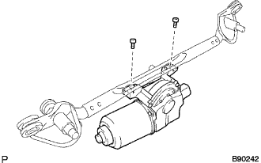

MÔTƠ VÀ THANH NỐI GẠT NƯỚC TRƯỚC > THÁO |
| 1. NGẮT CÁP ÂM RA KHỎI ẮC QUY |
| 2. THÁO NẮP CHE ĐẦU TAY GẠT NƯỚC PHÍA TRƯỚC |
Tháo 2 nắp.
| 3. THÁO CỤM TAY GẠT VÀ LƯỠI GẠT NƯỚC PHÍA TRƯỚC BÊN TRÁI |
 |
Tháo đai ốc và tay gạt và lưỡi gạt.
| 4. THÁO CỤM TAY GẠT VÀ LƯỠI GẠT NƯỚC PHÍA TRƯỚC BÊN PHẢI |
 |
Tháo đai ốc và tay gạt và lưỡi gạt.
| 5. THÁO GIOĂNG PHÍA TRÊN TỪ NẮP CAPÔ ĐẾN VÁCH NGĂN |
 |
Gắn 12 kẹp và tháo phớt.
| 6. THÁO CỤM MÁNG THÔNG GIÓ TRÊN VÁCH TÁP LÔ PHẢI |
 |
Tháo vít.
Nhả 5 khóa cài và 4 kẹp và tháo tấm thông gió.
| 7. THÁO CỤM MÁNG THÔNG GIÓ TRÊN VÁCH TÁP LÔ TRÁI |
 |
Tháo vít.
Nhả 5 khóa cài và 4 kẹp và tháo tấm thông gió.
| 8. THÁO CỤM MÔTƠ GẠT NƯỚC KÍNH CHẮN GIÓ VÀ THANH NỐI |
Ngắt giắc nối.
Tháo 2 bu lông.
Di chuyển miếng đệm của gạt mưa theo hướng mũi tên như trong hình vẽ để nhả miếng đệm gạt mưa ra khỏi thân xe và tháo môtơ gạt mưa và thanh dẫn động.
| 9. THÁO CỤM MÔTƠ RỬA KÍNH CHẮN GIÓ |
Dùng tôvít, tách 2 thanh nối của cần dẫn động gạt mưa ra khỏi môtơ gạt mưa như trong hình vẽ.
|  |
Dùng chìa hoa khế T30, tháo bulông và môtơ gạt nước.